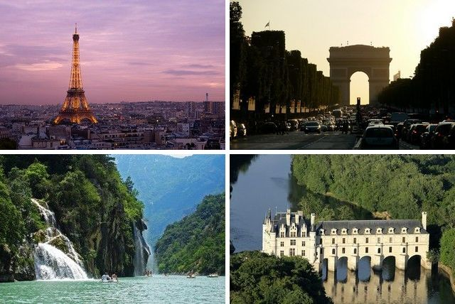

Туристическое агенство
Австрия
Франция
Греция

Основными природными достопримечательностями Франции являются Альпы с многочисленными лыжными курортами и альпинистскими лагерями, а также пляжи Средиземного моря (в основном в Ницце). В Канне, неподалеку от Ниццы, проводится всемирно знаменитый международный кинофестиваль, привлекающий огромное количество зрителей. Одной из главных исторических достопримечательностей являются замки Луары – несколько великолепных средневековых замков, расположенных на берегах Луары. Культурным центром Франции является, безусловно, Париж, в котором находятся главные музеи страны:
- Лувр (бывший королевский дворец, в котором расположено 225 галерейи около 400 тысяч экспонатов);
- Центр искусств Помпиду;
- Музей Пикассо с коллекцией работ знаменитого художника;
- Музей Cовременного искусства;
- Музей импрессионистов;
- Музей декоративного искусства;
- Музей Родена (коллекция скульптур).